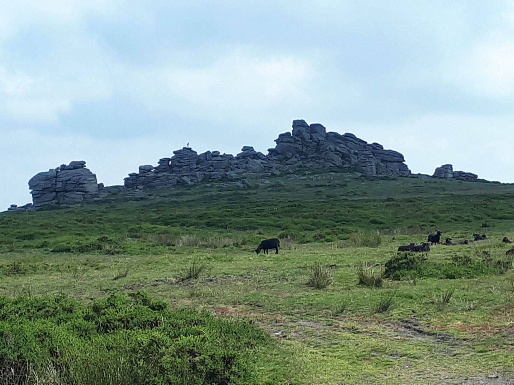
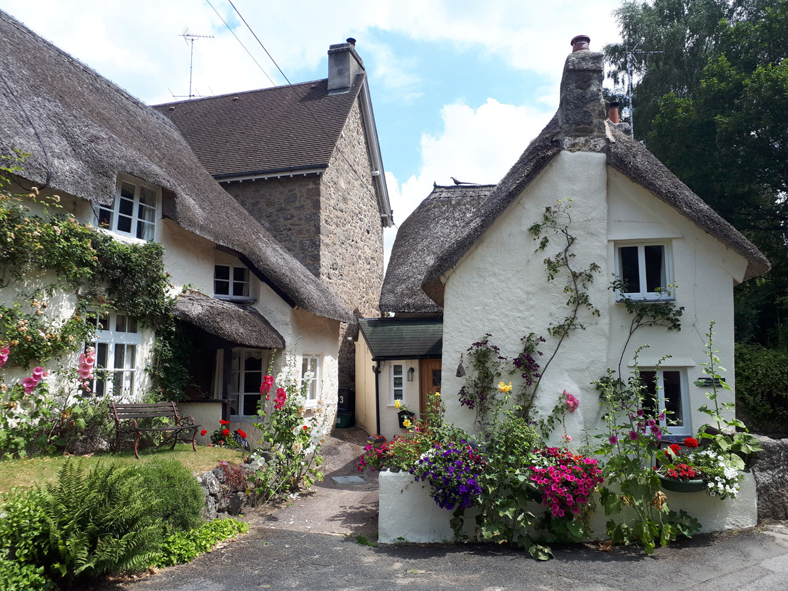

Dartmoor
Ein grosser Teil des Dartmoor wurde vor 70 Jahren zum Nationalpark erklärt. Man findet eine interessante Moorlandschaft und viele historische Überreste, die dank dem harten Granitgestein erhalten geblieben sind. Schön sind auch die kleinen Orte mit den
strohgedeckten Cottages wie z. B. Widecombe in the Moor oder Lustleigh in the Moor. Machen sie eine kleine Wanderung und geniessen sie einen feinen Devon Cream Tea in einem lokalen Café.
 